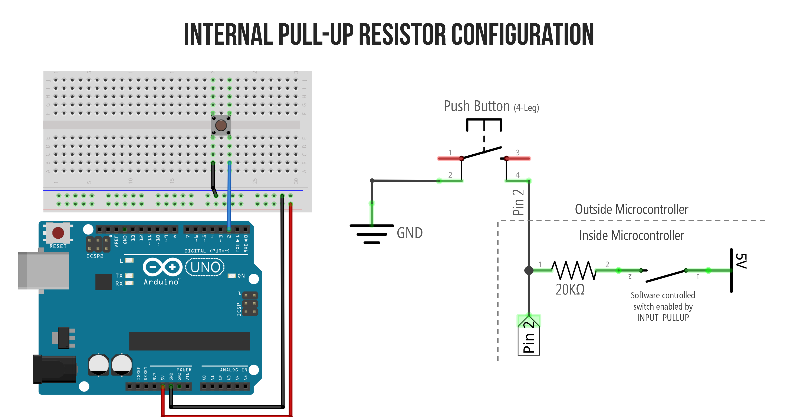

1Three Pin Modes
Every GPIO pin on an MCU can be in one of three modes. You pick with pinMode() in setup():
| Mode | What it does | When to use |
|---|---|---|
OUTPUT | Drives voltage HIGH or LOW | LEDs, motor control, signalling |
INPUT | High-impedance read (floating) | External pull-up/down already present |
INPUT_PULLUP | Input with internal ~50 kΩ pull-up | Buttons — most common mode! |
2The Counterintuitive Button
Here's the thing that trips up every beginner. A button with INPUT_PULLUP wires like this:

Left: breadboard wiring. Right: what's happening electrically. The internal 20 kΩ resistor holds the pin HIGH by default. Pressing the button connects the pin to GND → pin reads LOW.
🏆 The Counterintuitive Part
Button NOT pressed →
Button PRESSED →
This is called active-low logic. It feels wrong at first, but 90% of real-world buttons work this way because connecting the other leg to GND is electrically simpler.
digitalRead() returns HIGH.Button PRESSED →
digitalRead() returns LOW.
This is called active-low logic. It feels wrong at first, but 90% of real-world buttons work this way because connecting the other leg to GND is electrically simpler.
3The Code
const int BTN_PIN = 4; const int LED_PIN = 2; void setup() { pinMode(BTN_PIN, INPUT_PULLUP); // button with internal pullup pinMode(LED_PIN, OUTPUT); // LED as output } void loop() { if (digitalRead(BTN_PIN) == LOW) { // button is pressed digitalWrite(LED_PIN, HIGH); // turn LED on } else { digitalWrite(LED_PIN, LOW); // otherwise off } }
💻 Try It Live
Button-Controlled LED in Wokwi

Actual Wokwi workspace. Click the button in the simulator; the LED turns on.
Build it:
- Open the ready-made project → wokwi.com/projects/375237011181407233
- The circuit is already wired for you (Pin 2 LED, Pin 4 button)
- Click the green Play button (top-right)
- Click the button in the simulator — LED turns on. Release — LED off.
- Challenge: Modify the code so pressing TOGGLES the LED (press once = on, press again = off). Hint: track state in a
boolvariable and flip it on each press.
⚠ ESP32 Pin Warnings
On ESP32, avoid using GPIO 0, 2, 12, 15 for buttons with external pullups. These are "strapping pins" — their state at boot affects how the ESP32 starts up. Safe button pins: GPIO 4, 5, 13, 14, 17, 18, 19, 23, 25–27, 32, 33.
4Driving Real Loads
Remember: GPIO pins output only ~20 mA. You can light an LED directly, but for motors or bigger loads, you need the transistor circuits from Lesson 3. The GPIO controls the transistor's base/gate; the transistor controls the load.
🔍 Check Yourself
Which mode for a button wired to GND without external resistor?
INPUT_PULLUP. The internal pull-up holds the pin HIGH until the button connects it to GND.
What does digitalRead() return when the pressed INPUT_PULLUP button is closed?
LOW. Pressed = connected to GND = low voltage = LOW.
Why not use GPIO 12 for a button on ESP32?
Strapping pin — its state at boot affects flash voltage selection. Pulling it via a button/resistor could prevent the board from booting reliably.
Can a GPIO pin drive a 500 mA motor directly?
No. GPIO limits ~20 mA. Use a transistor (MOSFET preferred) as shown in Lesson 3.
Key Takeaways
- Three pin modes:
OUTPUT,INPUT,INPUT_PULLUP. - Buttons usually wire to GND with INPUT_PULLUP — pressed reads LOW.
- GPIO can source/sink ~20 mA. Bigger loads need a transistor switch.
- Avoid ESP32 strapping pins (0, 2, 12, 15) for external circuits without care.